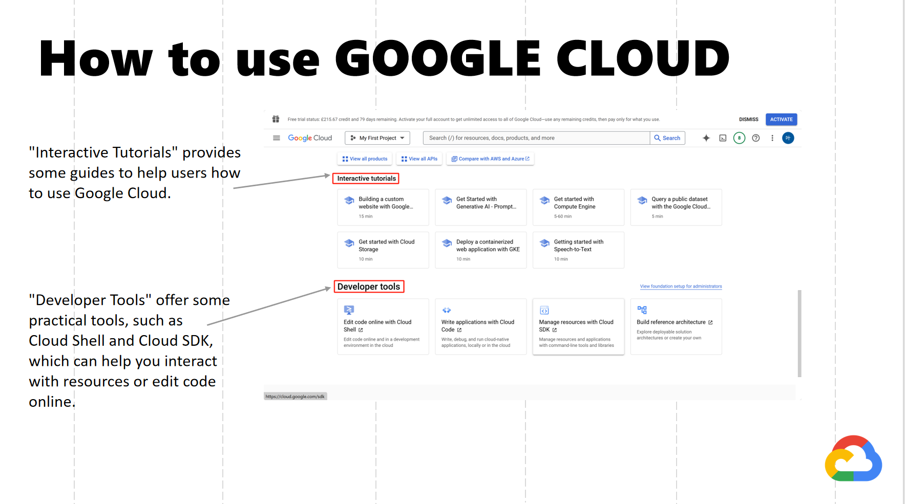

GOOGLE CLOUD PLATFORM
Google-Cloud-Platform PowerPoint
Contents
- Introduction
- What is GOOGLE CLOUD
- How to use GOOGLE CLOUD
- Usage scenarios of GOOGLE CLOUD
- Advantages and disadvantages of GOOGLE CLOUD
- Code example
- Key technologies of GOOGLE CLOUD
- GOOGLE CLOUD Tutorial Guide
- References
1.Introduction
This is a Google Cloud content introduction talk by Ye Shen, Yuanjie Zhang, Alyssa Maxwell, Ruji Zhang, and Yifei Wang from Mobile Web Development Group G.

The presentation contents as followed:
2.What is GOOGLE CLOUD
Google Cloud Platform, or GCP, is a series of cloud computing services provided by Google. In addition to providing management tools, Google Cloud Platform also provides a range of modular cloud services, including: cloud computing, data storage, data analytics and machine learning. In addition, users are required to provide credit card or bank account payment information when registering an account.
3.How to use GOOGLE CLOUD

Introduced the three main functions of the console page.(Menu,Search Bar,Avatar)

Some products provided by Google Cloud. Focus on how to create buckets, virtual machines and databases.
Scrolling down the console page, you'll see that the term "Product" refers to the various services and tools offered by Google Cloud, such as virtual machines, databases, and storage buckets.

Explains how to use buckets to store files in Google Cloud.
The simplest example is that we can use Google Cloud to store our files. After logging into our Google account and linking a credit card, we can create a bucket, and then we can upload files to it. Once the upload is successful, we can download the files back from Google Cloud.

Steps to create a virtual machine on Google Cloud. The configuration of the virtual machine can be customized according to personal needs.
Click "Create Instance" in "Compute Engine" to create a virtual machine. During the creation process, we can make the selection of functions such as instance naming, selection of region and operating system. For example, we can choose the most familiar Ubuntu operating system in the Boot disk. After we complete the setup, click the "Create" button to obtain a virtual machine. Then we can use SSH-in-browser to access the command line interface of the virtual machine.

Steps to create a database on Google Cloud. Similarly, the configuration of the database can be customized according to personal needs.
To create a database, we also need to click ＂Create Instance" in "SQL＂ first, then select the database engine and versions. Finally, click "Create Instance＂again to create a database.

The console page additionally provides "Developer Tools" and "Interactive Tutorials" to help users better use and understand Google Cloud.
"Interactive Tutorials" provides some guides to help users how to use Google Cloud.
"Developer Tools" offer some practical tools, such as Cloud Shell and Cloud SDK, which can help you interact with resources or edit code online.